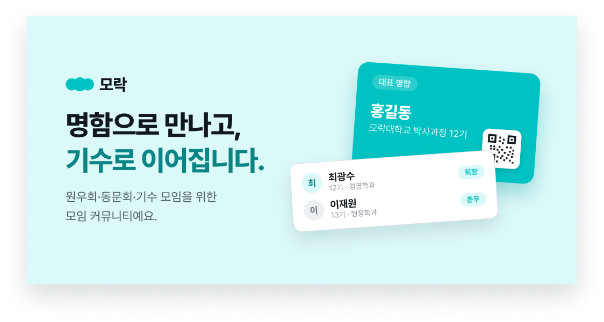
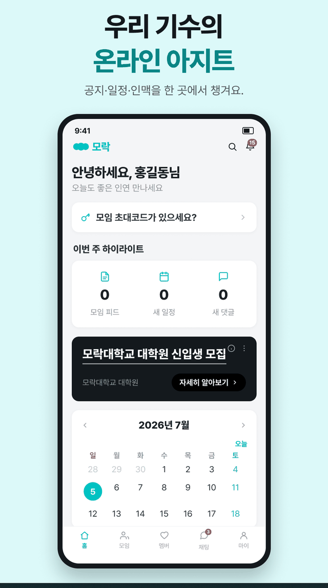
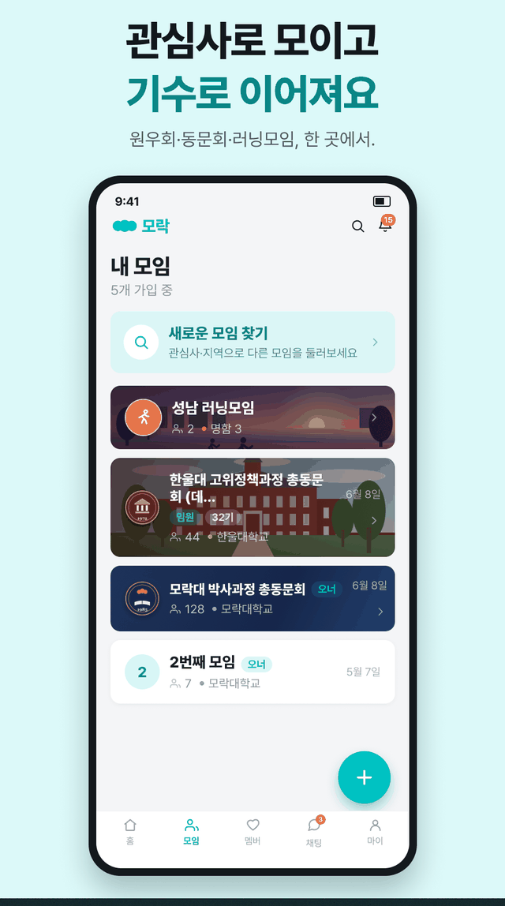
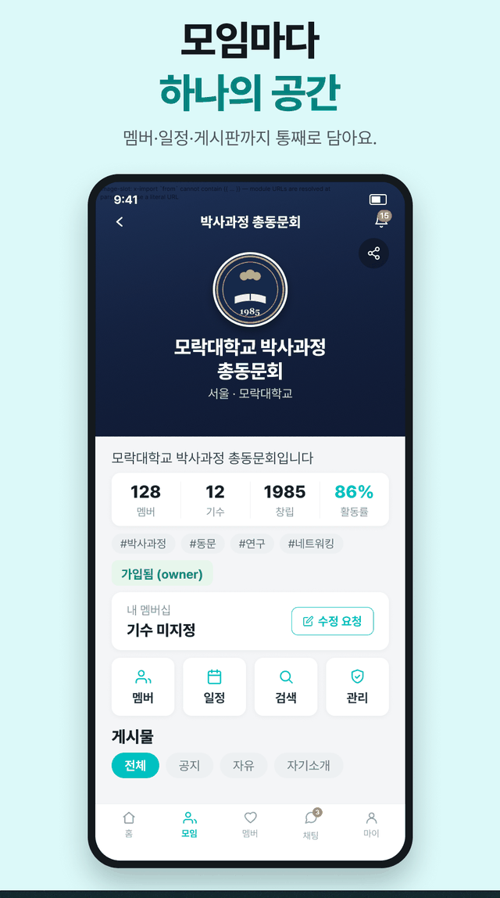
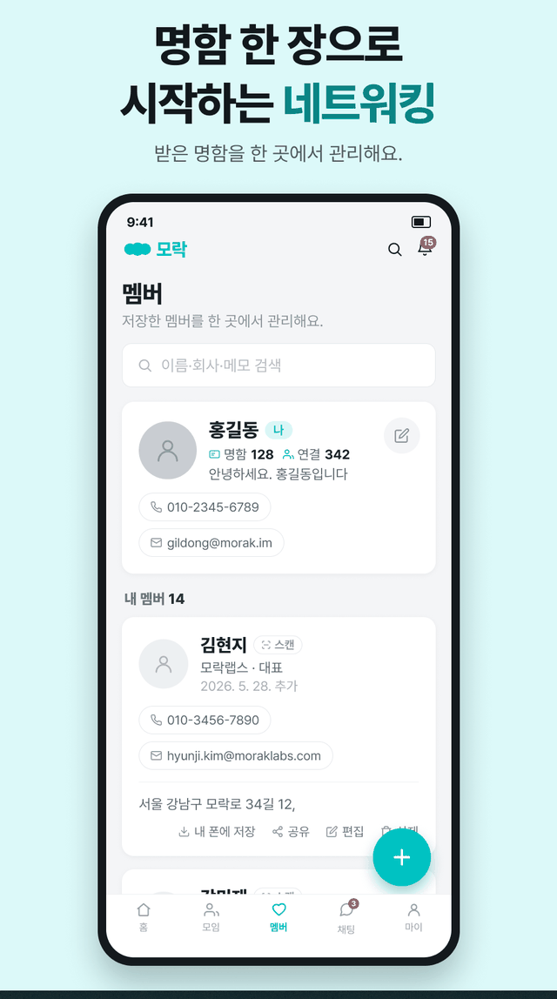
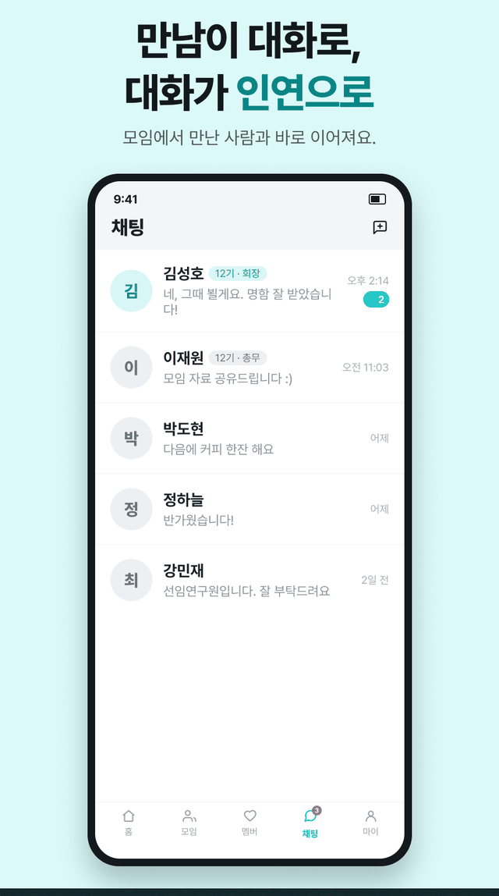

모임 운영에 필요한 전부
명함 교환부터 명부 관리까지, 운영진과 회원 모두를 위한 기능.
CARD · QR
디지털 명함
명함 여러 장을 만들어 모임마다 골라 쓰고, QR로 즉석 교환합니다. 종이 명함은 촬영해 인맥으로 저장.
COHORT
기수 · 직책 관리
"12기 총무", "7기 회원" — 기수와 직책이 명함에 함께 보여 처음 만나도 관계가 바로 파악됩니다.
EVENT
일정 · 참석 관리
모임 일정과 참석 응답(RSVP), 대기열, 리마인더 푸시. 내 모임 일정과 멤버 생일이 캘린더 하나에.
FEED · POLL
게시판 · 투표
공지·자유글·경조사 소식과 피드에서 바로 참여하는 투표. 중요한 글은 푸시로 전달됩니다.
CHAT
채팅
1:1 대화와 모임 단체방. 모임을 만들면 단체 채팅방이 자동으로 생깁니다.
DIRECTORY
원우수첩(명부)
기수별 회원 명부를 언제나 최신으로. 엑셀 명단을 붙여넣으면 명부가 즉시 만들어집니다.
화면 미리보기





개인정보는 회원에게만
실명·연락처·명함·명부는 로그인한 모임 구성원에게만 보입니다. 비회원에게는 노출되지 않습니다.
우리 모임도 모락으로 옮겨볼까?
지금 바로 무료로 모임을 만들 수 있습니다. 명단 온보딩은 도입 문의로 도와드립니다.